The showroom
Seen best
in person.
in person.
A private showroom of stone, cabinetry, and tile — sourced from quarries and makers around the world. Shown by appointment.
Request an appointmentA private room of slabs, cabinetry and tile under one roof — sourced, numbered, and set aside. What you see here is a fraction of it.
Exotic stone, chosen for its character. A rotating look at what's on the floor.
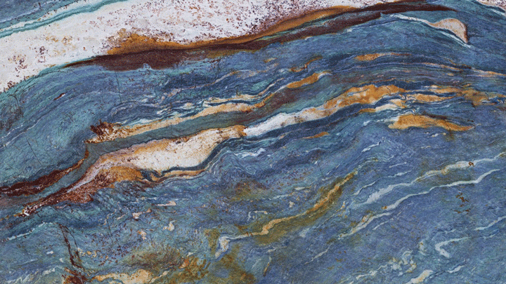
Van Gogh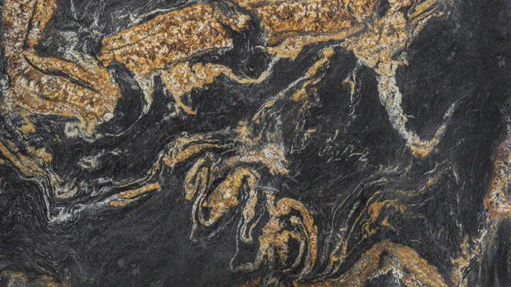
Altair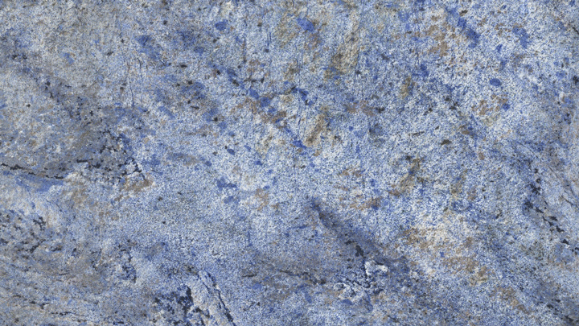
Blue Bahia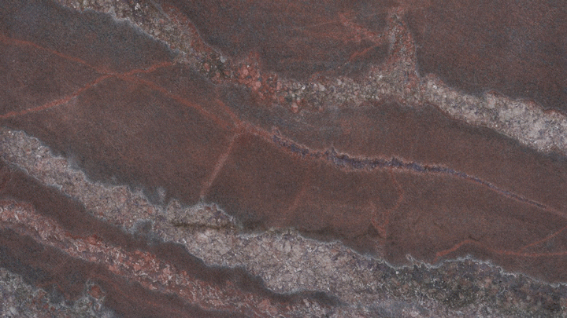
Lava Jewel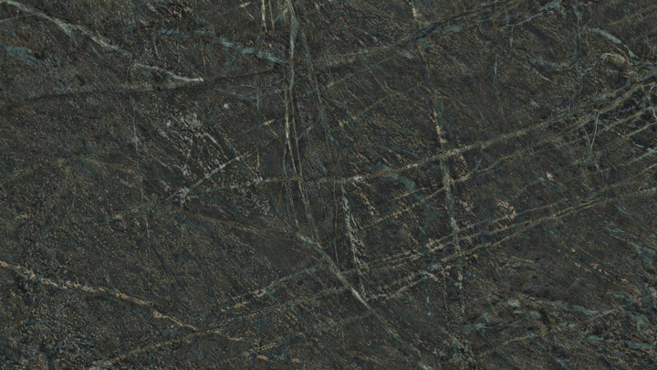
Verde Brasiliano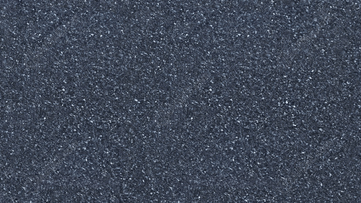
Blue Pearl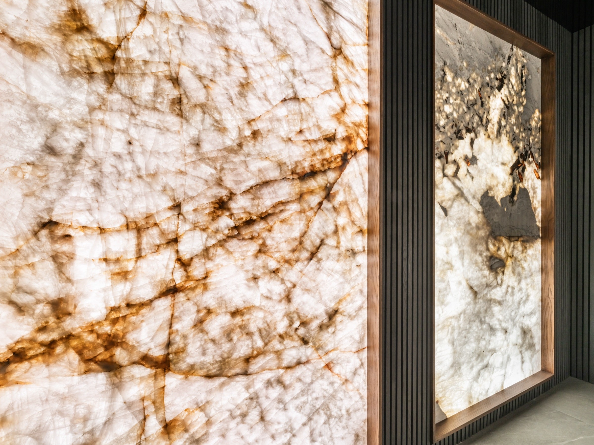
Marble, quartzite, and travertine — chosen by colour and movement, not catalogue.
View the stone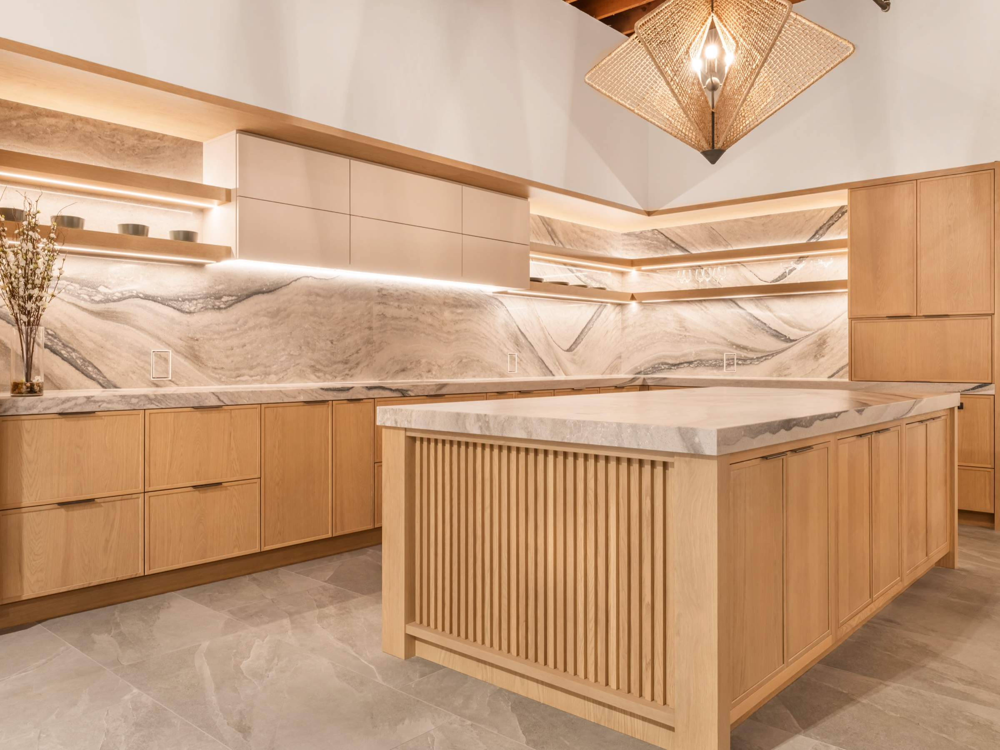
Door profiles and finishes first — the brand follows. Oak, lacquer, and stained walnut.
View cabinetry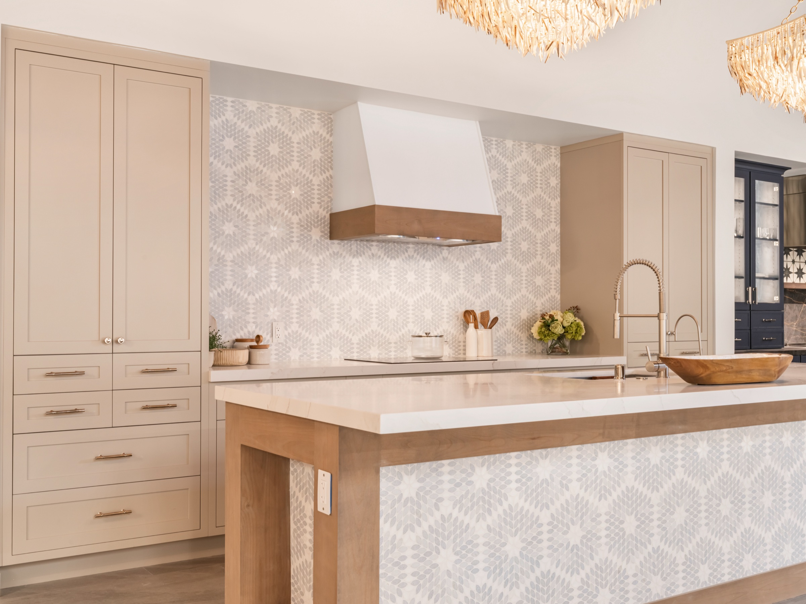
Zellige, stone mosaic, and hand-glazed field tile — the detail that decides a room.
View tile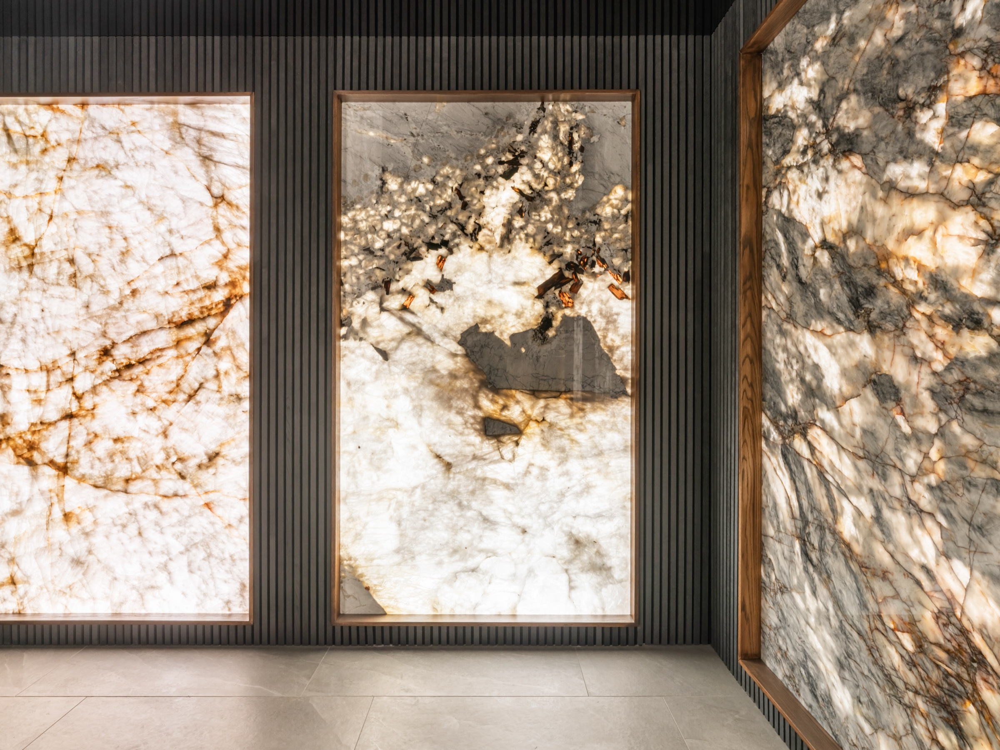
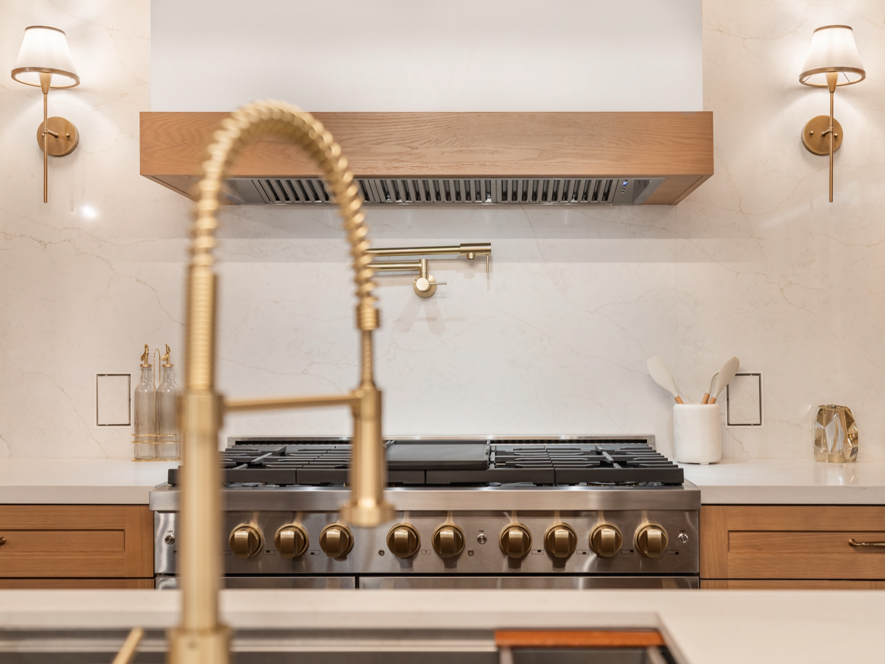
The showroom is not open to the public. Access is by introduction and referral — each request is reviewed personally, and we respond only to those we're able to receive.